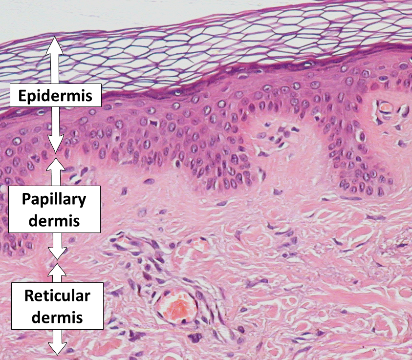

Clinical medicine
2nd Degree Burn: Superficial and Deep Partial Thickness Burns Explained
Source presentation · 2 min read
Edits save on this browser. Download a copy for your records.
Second Degree Burns
Second degree burns
- The second degree burn involve the epidermis and the dermis and it is on two types:
- Superficial partial thickness: extends into papillary dermis (superficial layer of dermis)
- Deep partial thickness: extends into reticular dermis (deep layer of dermis)


Superficial second degree burn presentation
- Extends into papillary dermis but the reticular dermis is spared
- Redness of the burned skin because blood vessels still intact in the reticular dermis
- Intense pain because nerve fibers are located in the reticular dermis and it is still intact
- Formation of clear blister (pockets of skin containing fluid)
- Erythematous and blanch to touch
- Moist
- Spares hair follicles and sweat glands (both are in the reticular layer of the dermis)
- Local infection (cellulitis) is common
Superficial second degree burn healing
- Heals without scarring/ minimal scarring
- Heals within 7- 14 days
- Treatment with cooling the burn with running water for 10-20 min and applying antibiotic ointment and dressing
Deep second degree burn presentation
- Injury to epidermis and both layers of the dermis (all the dermis involved)
- Appears pale because the blood vessels are in the reticular layer and once injured skin would be pale
- Don’t blanch to touch
- Less painful, remain painful to pinprick (nerve endings are in reticular layer, once injured pain would be much less)
- Blisters sometimes present
- Dry
- Hair follicles and sweat glands might be damaged or destroyed
Deep second degree burn healing
- Heals within 2-6 weeks
- Severe scarring and contractures
- May require excision and skin grafting
Continue learning
Practice the topics covered in this lecture.